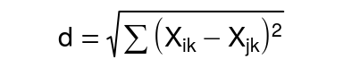
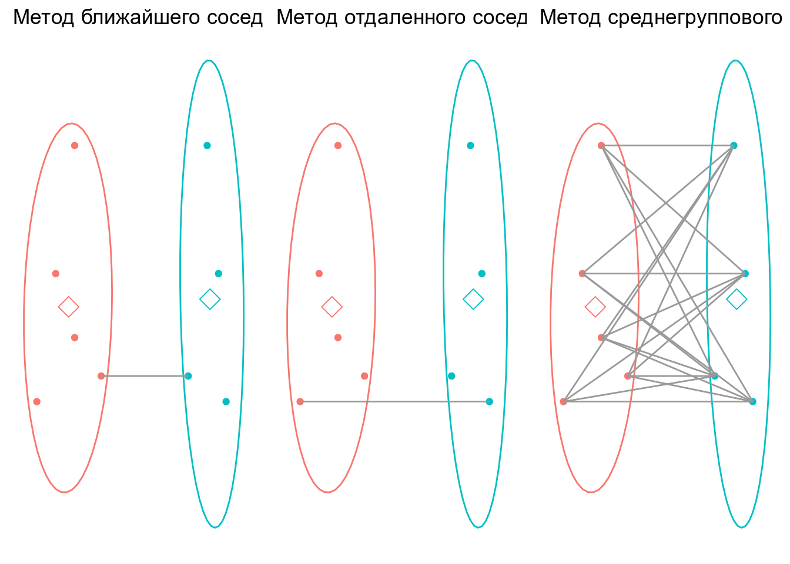
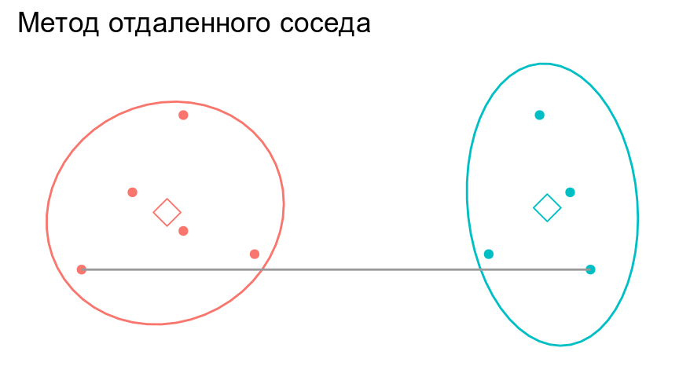
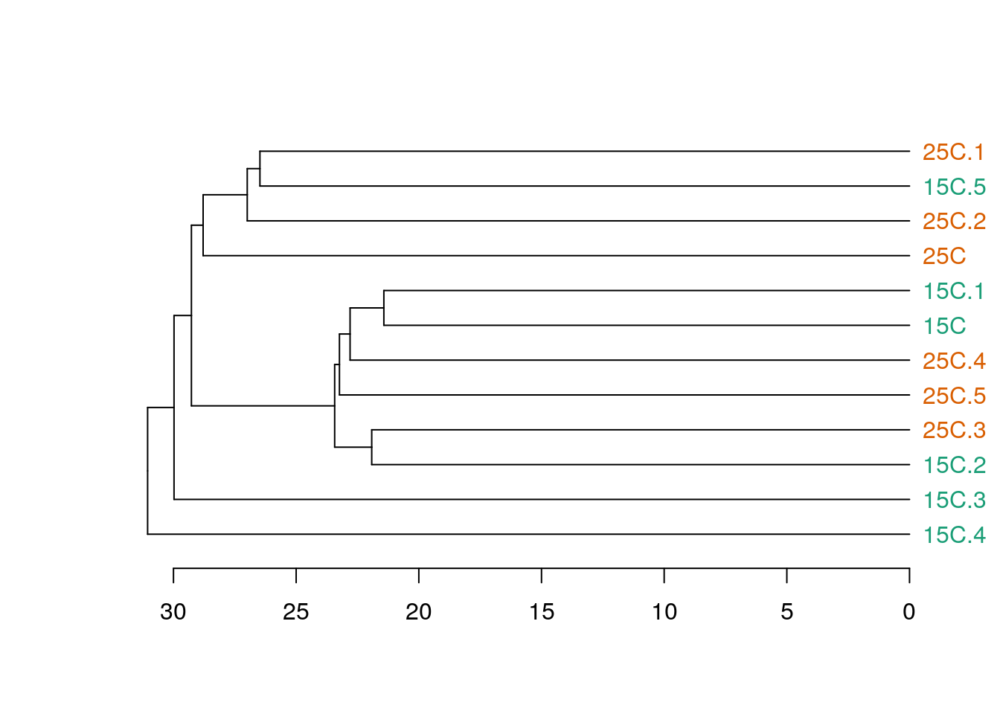
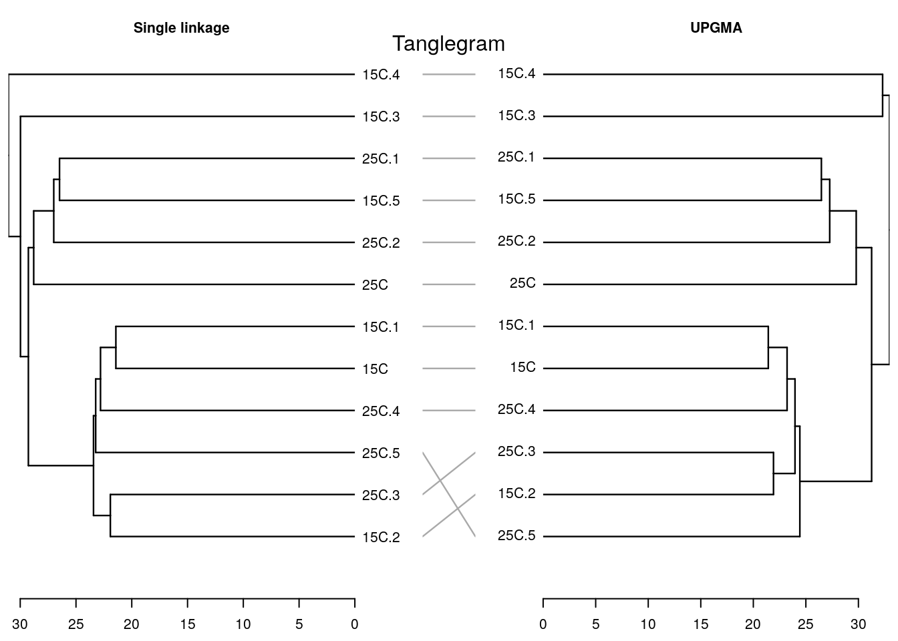

Классификация пептидов и проб
Марина Варфоломеева
В этом разделе мы поговорим о том, как делать кластерный анализ и строить тепловые карты экспрессии в R (R Core Team 2016).
- Код к этому занятию
- Данные (Artigaud et al. 2015):
- Пакеты (инсталлируйте при необходимости)
# Из репозитория CRAN
install.packages(c("dendextend", "ape", "fpc", "pvclust", "gplots", "NMF"), dependencies = TRUE)Методы построения деревьев
Существует много методов классификации. Их можно разделить на две основные группы (хотя есть много других вариантов деления):
Методы класстеризации на основании расстояний:
- Метод ближайшего соседа
- Метод отдаленного соседа
- Метод среднегруппового расстояния
- Метод Варда
- и т.д. и т.п.
Методы кластеризации на основании признаков:
- Метод максимальной бережливости
- Метод максимального правдоподобия
В этом курсе мы будем затрагивать только методы иерархической класстеризации на основании расстояний.
Классификация данных проходит в несколько этапов. Рзультат кластеризации будет сильнее всего зависеть (1) от выбора коэффициента сходства-различия и (2) от алгоритма кластеризации. Нет формальных способов выбрать наиболее подходящий коэффициент и алгоритм.
Коэффициенты сходства-различия
Различия
d ≥ 0
Сходства
0 ≤ S ≤ 1 или −1 ≤ S ≤ 1
- Используются в качестве исходных данных для многих видов многомерных анализов, в т.ч. для иерархического кластерного анализа
- Из сходств можно получить различия и наоборот
- Свои собственные коэффициенты существуют для количественных и качественных признаков
Евклидово расстояние

Для двумерного пространства Евклидово расстояние рассчитывается так:

Т.е. Евклидово расстояние в этом гипотетическом примере будет

Для пространства с большим числом измерений формула Евклидова расстояния выглядит так:

Евклидово расстояние — это метрика.
Для всех метрик (расстояний) справедливы три свойства:
- Адекватность:
dA, A = 0
- Симметричность:
dA, B = dB, A
- Триангулярность:
dA, B ≤ dA, C + dC, B
Триангулярность есть только у метрик! Именно потому, что для них выполняется неравенство треугольника, они имеют право называться расстояниями, а не просто мерами различия.
Коэффициент Жаккара
Если используются бинарные данные - то посчитать сходство можно, учитывая присутствие-отсутствие признаков.
| объект I / объект J | признак есть | признака нет |
|---|---|---|
| признак есть | a | b |
| признака нет | c | d |
- I, J — объекты
- a — число сходств по наличию признака
- b — число отличий I от J
- c — число различий J от I
- d — число сходств по отсутствию признака
- nJ — число признаков у объекта J
- nI — число признаков у объекта I
- n = a + b + c + d — общее число признаков
Коэффициентов сходства-различия для качественных данных придумано великое множество.
Коэффициент Жаккара рассчитывается по формуле:
S = a/(a + b + c), причем 0 ≤ S ≤ 1
Соответствующий коэффициент различия Жаккара можно посчитать так:
d = 1 − a/(a + b + c)=(b + c)/(a + b + c)
У коэффициента Жаккара есть одно забавное свойство. Обратите внимание, в знаменателе фигурирует не общее число признаков — сходство по отсутствию не учитывается! Это свойство очень полезно для работы с протеомными данными. Пятно может отсутствовать на геле не только потому, что пептида не было в пробе, но и в силу самых разных других причин (например, экспрессия ниже порога определения, плохо прокрашен образец и проч.).
Например, пусть у нас есть три пробы, у которых мы нашли всего 5 пятен.
| Objects | Spot.1 | Spot.2 | Spot.3 | Spot.4 | Spot.5 |
|---|---|---|---|---|---|
| Object 1 | 1 | 1 | 0 | 1 | 0 |
| Object 2 | 1 | 1 | 1 | 1 | 0 |
| Object 3 | 0 | 0 | 0 | 1 | 0 |
Чтобы оценить различие между этими пробами, можно посчитать коэффициент Жаккара.
| Object 1 | Object 2 | Object 3 | |
|---|---|---|---|
| Object 1 | 0.00 | 0.25 | 0.67 |
| Object 2 | 0.25 | 0.00 | 0.75 |
| Object 3 | 0.67 | 0.75 | 0.00 |
Точно так же, чтобы оценить различие пептидов, можно посчитать коэффициент Жаккара между пептидами
| Spot 1 | Spot 2 | Spot 3 | Spot 4 | Spot 5 | |
|---|---|---|---|---|---|
| Spot 1 | 0.00 | 0.00 | 0.50 | 0.33 | 1 |
| Spot 2 | 0.00 | 0.00 | 0.50 | 0.33 | 1 |
| Spot 3 | 0.50 | 0.50 | 0.00 | 0.67 | 1 |
| Spot 4 | 0.33 | 0.33 | 0.67 | 0.00 | 1 |
| Spot 5 | 1.00 | 1.00 | 1.00 | 1.00 | 0 |
Алгоритмы иерархической класстеризации на основании расстояний
Мы рассмотрим несколько алгоритмов, которые строят иерархическую кластеризацию объектов на основании матрицы расстояний / сходств между ними:
- Метод ближайшего соседа
- Метод отдаленного соседа
- Метод среднегруппового расстояния
- Метод Варда

Метод ближайшего соседа (= nearest neighbour = single linkage)
- к кластеру присоединяется ближайший к нему кластер/объект
- кластеры объединяются в один на расстоянии, которое равно расстоянию между ближайшими объектами этих кластеров

Особенности:
- Может быть сложно интерпретировать, если нужны группы
- объекты на дендрограмме часто не образуют четко разделенных групп
- часто получаются цепочки кластеров (объекты присоединяются как бы по-одному)
- Хорош для выявления градиентов
Работа метода ближайшего соседа


Метод отдаленного соседа (= furthest neighbour = complete linkage)
- к кластеру присоединяется отдаленный кластер/объект
- кластеры объединяются в один на расстоянии, которое равно расстоянию между самыми отдаленными объектами этих кластеров (следствие - чем более крупная группа, тем сложнее к ней присоединиться)

Особенности:
- На дендрограмме образуется много отдельных некрупных групп
- Хорош для поиска дискретных групп в данных
Как работает метод отдаленного соседа


Метод невзвешенного попарного среднего (= UPGMA = Unweighted Pair Group Method with Arithmetic mean)
- кластеры объединяются в один на расстоянии, которое равно среднему значению всех возможных расстояний между объектами из разных кластеров.

Особенности:
- UPGMA и WUPGMС иногда могут приводить к инверсиям на дендрограммах

Инверсии на дендрограммах
из Borcard et al., 2011
Как работает метод среднегруппового расстояния


Метод Варда (= Ward’s Minimum Variance Clustering)
- объекты объединяются в кластеры так, чтобы внутригрупповая дисперсия расстояний была минимальной

Особенности:
- метод годится и для неевклидовых расстояний несмотря на то, что внутригрупповая дисперсия расстояний рассчитывается так, как будто это евклидовы расстояния
Кластерный анализ в R
Пример: Гребешки
expr <- read.table("data/Prot_Br_H_T.csv", header = TRUE, sep = ";", row.names = 1)
fact <- read.table("data/Prot_Br_H_T_factor.csv", header = TRUE, sep = ";", row.names = 1)Давайте познакомимся с данными.
Все ли правильно открылось?
head(expr, 2)## HT_Br_141_27754 HT_Br_142_27755 HT_Br_143_27756 HT_Br_145_27757
## 45 6763312 6966863 6006985 5120761
## 53 9950611 17838761 12401817 14001657
## HT_Br_153_27758 HT_Br_182_30362 HT_Br_184_30363 HT_Br_186_30343
## 45 9120571 6161298 4438035 19590652
## 53 11963762 14891363 9596294 23846920
## HT_Br_185_30364 HT_Br_189_30367 HT_Br_221_30350 HT_Br_222_30351
## 45 5282460 6504236 4678531 2160960
## 53 9998502 9999054 11837575 12884919
## HT_Br_227_30353 HT_Br_229_30354 HT_Br_233_30355 HT_Br_122_27749
## 45 3939886 2445546 64768 7563888
## 53 9805115 8734801 604969 12735062
## HT_Br_123_27750 HT_Br_125_27751 HT_Br_126_27752 HT_Br_129_27753
## 45 5879243 7043350 5885715 6699740
## 53 8899526 11570789 17043221 9936874
## HT_Br_161_27759 HT_Br_162_27760 HT_Br_166_30359 HT_Br_172_30342
## 45 5128015 2430172 5303710 5635613
## 53 12689674 9537262 10988683 11866547
## HT_Br_173_30361 HT_Br_202_30368 HT_Br_203_30369 HT_Br_204_30346
## 45 2586951 4819522 4860770 4842049
## 53 7705261 11889297 15321258 18908028
## HT_Br_205_30347 HT_Br_207_30345
## 45 1839401 605503
## 53 6482305 16408730dim(expr)## [1] 647 30sapply(expr, class)## HT_Br_141_27754 HT_Br_142_27755 HT_Br_143_27756 HT_Br_145_27757
## "integer" "integer" "integer" "integer"
## HT_Br_153_27758 HT_Br_182_30362 HT_Br_184_30363 HT_Br_186_30343
## "integer" "integer" "integer" "integer"
## HT_Br_185_30364 HT_Br_189_30367 HT_Br_221_30350 HT_Br_222_30351
## "integer" "integer" "integer" "integer"
## HT_Br_227_30353 HT_Br_229_30354 HT_Br_233_30355 HT_Br_122_27749
## "integer" "integer" "integer" "integer"
## HT_Br_123_27750 HT_Br_125_27751 HT_Br_126_27752 HT_Br_129_27753
## "integer" "integer" "integer" "integer"
## HT_Br_161_27759 HT_Br_162_27760 HT_Br_166_30359 HT_Br_172_30342
## "integer" "integer" "integer" "integer"
## HT_Br_173_30361 HT_Br_202_30368 HT_Br_203_30369 HT_Br_204_30346
## "integer" "integer" "integer" "integer"
## HT_Br_205_30347 HT_Br_207_30345
## "integer" "integer"head(fact)## Oxygen Temperature
## HT_Br_141_27754 Normox 10C
## HT_Br_142_27755 Normox 10C
## HT_Br_143_27756 Normox 10C
## HT_Br_145_27757 Normox 10C
## HT_Br_153_27758 Normox 10C
## HT_Br_182_30362 Normox 18Cdim(fact)## [1] 30 2sapply(fact, class)## Oxygen Temperature
## "factor" "factor"Сколько экспериментальных групп? И каковы объемы выборок?
table(fact$Oxygen, fact$Temperature)##
## 10C 18C 25C
## Hypox 5 5 5
## Normox 5 5 5Есть ли пропущенные значения экспрессии?
sapply(expr, function(x)sum(is.na(x)))## HT_Br_141_27754 HT_Br_142_27755 HT_Br_143_27756 HT_Br_145_27757
## 0 0 0 0
## HT_Br_153_27758 HT_Br_182_30362 HT_Br_184_30363 HT_Br_186_30343
## 0 0 0 0
## HT_Br_185_30364 HT_Br_189_30367 HT_Br_221_30350 HT_Br_222_30351
## 0 0 0 0
## HT_Br_227_30353 HT_Br_229_30354 HT_Br_233_30355 HT_Br_122_27749
## 0 0 0 0
## HT_Br_123_27750 HT_Br_125_27751 HT_Br_126_27752 HT_Br_129_27753
## 0 0 0 0
## HT_Br_161_27759 HT_Br_162_27760 HT_Br_166_30359 HT_Br_172_30342
## 0 0 0 0
## HT_Br_173_30361 HT_Br_202_30368 HT_Br_203_30369 HT_Br_204_30346
## 0 0 0 0
## HT_Br_205_30347 HT_Br_207_30345
## 0 0Нужна ли нормализация?
Боксплот исходных данных экспрессии
# создаем палитру и вектор цветов
library(RColorBrewer)
pal <- brewer.pal(9, "Set1")
groups <- interaction(fact$Oxygen, fact$Temperature)
cols <- pal[groups]
# боксплот
boxplot(expr, outline = FALSE, notch = T, col = cols, main = "Исходные данные")## Warning in bxp(structure(list(stats = structure(c(231211, 1008860.5,
## 2130516, : some notches went outside hinges ('box'): maybe set notch=FALSElegend("topright", levels(groups), fill = brewer.pal(9, "Set1"), bty = "n", xpd = T)
RI-plot исходных данных
Создадим пользовательскую функцию для построения RI-плота.
RIP <- function(X1, X2, main = "RI-plot", pch = 19, col = "darkgreen", lpars = list(col = "blue", lwd = 2), alpha = 0.3, xlab = "Intensity", ylab = "Ratio", ...){
# соотношение и интенсивность
R <- log2(rowMeans(X2) / rowMeans(X1))
I <- log10(rowMeans(X2) * rowMeans(X1))
# прозрачный цвет
col_btransp <- adjustcolor(col, alpha.f = alpha)
# график
scatter.smooth(I, R, main = main, pch = pch, xlab = xlab, ylab = ylab, col = col_btransp, lpars = lpars, ...)
abline(h = 0)
}Строим RI-plot’ы по разным факторам и ужасаемся
RIP(expr[, fact$Oxygen == "Normox"], expr[, fact$Oxygen == "Hypox"], main = "Raw data, Normox vs. Hypox")
RIP(expr[, fact$Temperature == "10C"], expr[, fact$Temperature == "18C"], main = "Raw data, 10C vs 18C")
RIP(expr[, fact$Temperature == "10C"], expr[, fact$Temperature == "25C"], main = "Raw data, 10C vs 25C")
Данные не нормализованы и не логарифмированы.
Нормализуем данные
library(limma)
expr_norm <- normalizeQuantiles(expr)Проверяем на боксплоте
boxplot(expr_norm, outline = FALSE, notch = T, col = cols, main = "Нормализованные данные")
legend("topright", levels(groups), fill = brewer.pal(9, "Set1"), bty = "n", xpd = T)
Строим RI-plot’ы по разным факторам и радуемся
RIP(expr_norm[, fact$Oxygen == "Normox"],
expr_norm[, fact$Oxygen == "Hypox"],
main = "Normalized data, Normox vs. Hypox")
RIP(expr_norm[, fact$Temperature == "10C"],
expr_norm[, fact$Temperature == "18C"],
main = "Normalized data, 10C vs 18C")
RIP(expr_norm[, fact$Temperature == "10C"],
expr_norm[, fact$Temperature == "25C"],
main = "Normalized data, 10C vs 25C")
Логарифмируем данные
expr_log <- log2(expr_norm)Подготовка данных к кластерному анализу
Названия проб в этом файле — длинные непонятные аббревиатуры.
colnames(expr_log)## [1] "HT_Br_141_27754" "HT_Br_142_27755" "HT_Br_143_27756"
## [4] "HT_Br_145_27757" "HT_Br_153_27758" "HT_Br_182_30362"
## [7] "HT_Br_184_30363" "HT_Br_186_30343" "HT_Br_185_30364"
## [10] "HT_Br_189_30367" "HT_Br_221_30350" "HT_Br_222_30351"
## [13] "HT_Br_227_30353" "HT_Br_229_30354" "HT_Br_233_30355"
## [16] "HT_Br_122_27749" "HT_Br_123_27750" "HT_Br_125_27751"
## [19] "HT_Br_126_27752" "HT_Br_129_27753" "HT_Br_161_27759"
## [22] "HT_Br_162_27760" "HT_Br_166_30359" "HT_Br_172_30342"
## [25] "HT_Br_173_30361" "HT_Br_202_30368" "HT_Br_203_30369"
## [28] "HT_Br_204_30346" "HT_Br_205_30347" "HT_Br_207_30345"Вместо них нужно создать осмысленные и краткие лейблы для проб.
Информацию о лейблах возьмем из датафрейма с факторами
head(fact)## Oxygen Temperature
## HT_Br_141_27754 Normox 10C
## HT_Br_142_27755 Normox 10C
## HT_Br_143_27756 Normox 10C
## HT_Br_145_27757 Normox 10C
## HT_Br_153_27758 Normox 10C
## HT_Br_182_30362 Normox 18CКодировку уровня содержания кислорода мы сократим до одной буквы, из температуры уберем C, и добавим номер гребешка для уникальности. Затем склеим лейблы из трех частей.
part1 <- substr(x = fact$Oxygen, start = 0, stop = 1)
part2 <- substr(x = fact$Temperature, start = 0, stop = 2)
part3 <- rep(1:5, 6)
colnames(expr_log) <- paste(part1, part2, part3, sep = "_")Чтобы строить деревья для проб, нам понадобится транспонировать исходные данные
texpr_log <- t(expr_log)Давайте построим деревья при помощи нескольких алгоритмов кластеризации (по стандартизованным данным, с использованием Евклидова расстояния) и сравним их. Нам понадобится матрица расстояний.
d <- dist(x = texpr_log, method = "euclidean")Метод ближайшего соседа в R
hc_single <- hclust(d, method = "single")Деревья можно визуализировать при помощи базовой графики, но у нее довольно мало возможностей для настройки внешнего вида.
# ?plot.hclust
plot(hc_single)
Визуализируем средствами пакета ape (Paradis et al. 2004).
library(ape)
ph_single <- as.phylo(hc_single)
# ?plot.phylo
plot(ph_single, type = "phylogram", cex = 0.7)
axisPhylo()
Визуализируем средствами dendextend (Galili 2015).
library(dendextend)
den_single <- as.dendrogram(hc_single)
# ?plot.dendrogram
op <- par(mar = c(4, 4, 1, 4), cex = 0.7)
plot(den_single, horiz = TRUE)
При желании можно раскрасить лейблы
Это можно сделать вручную, просто передав вектор нужных цветов в том порядке, в котором идут лейблы на дендрограмме. Но мы сейчас не будем заниматься ручным подбором порядка цветов. Давайте раскрасим дендрограмму в произвольные цвета, чтобы понять, как это делается.
cols <- rainbow(30)
den_single_manual <- color_labels(dend = den_single, col = cols)
plot(den_single_manual, horiz = TRUE)
Чтобы не пришлось вручную создавать вектор цветов, можно попробовать при помощи функции вытащить информацию из лейблов на дендрограмме. Эта функция берет дендрограмму, экстрагирует из нее порядок лейблов, берет первые несколько букв в имени лейбла и на основании этого фактора создает вектор цветов.
get_colours <- function(dend, n_chars, palette = "Dark2"){
labs <- get_leaves_attr(dend, "label")
group <- substr(labs, start = 0, stop = n_chars)
group <- factor(group)
cols <- brewer.pal(length(levels(group)), name = palette)[group]
return(cols)
}Теперь можно легко раскрасить группы на дендрограмме, ориентируясь на первые несколько символов в названии лейбла.
cols <- get_colours(dend = den_single, n_chars = 4)
den_single_c <- color_labels(dend = den_single, col = cols)
plot(den_single_c, horiz = TRUE)
Метод отдаленного соседа в R
hc_compl <- hclust(d, method = "complete")
ph_compl <- as.phylo(hc_compl)
plot(ph_compl, type = "phylogram", cex = 0.7)
axisPhylo()
Визуализируем дерево, полученное методом отдаленного соседа, средствами dendextend
den_compl <- as.dendrogram(hc_compl)
cols <- get_colours(den_compl, n_chars = 4)
den_compl_c <- color_labels(den_compl, col = cols)
plot(den_compl_c, horiz = TRUE)
Метод невзвешенного попарного среднего в R
hc_avg <- hclust(d, method = "average")
ph_avg <- as.phylo(hc_avg)
plot(ph_avg, type = "phylogram", cex = 0.7)
axisPhylo()
Визуализируем дерево, полученное методом невзвешенного попарного среднего, средствами dendextend
den_avg <- as.dendrogram(hc_avg)
cols <- get_colours(den_avg, n_chars = 4)
den_avg_c <- color_labels(den_avg, col = cols)
plot(den_avg_c, horiz = TRUE)
Метод Варда в R
hc_w2 <-hclust(d, method = "ward.D2")
ph_w2 <- as.phylo(hc_w2)
plot(ph_w2, type = "phylogram", cex = 0.7)
axisPhylo()
Визуализируем дерево, полученное методом Варда, средствами dendextend
den_w2 <- as.dendrogram(hc_w2)
cols <- get_colours(den_w2, n_chars = 4)
den_w2_c <- color_labels(den_w2, col = cols)
plot(den_w2_c, horiz = TRUE)
Оценка качества кластеризации
Кофенетическая корреляция
Кофенетическое расстояние - расстояние между объектами на дендрограмме
Кофенетическую корреляцию можно рассчитать как пирсоновскую корреляцию (обычную) между матрицами исходных и кофенетических расстояний между всеми парами объектов
Метод, который дает наибольшую кофенетическую корреляцию дает кластеры лучше всего отражающие исходные данные
Можно рассчитать при помощи функции из пакета ape
Кофенетическая корреляция в R
Оцените при помощи кофенетической корреляции качество кластеризаций, полученных разными методами. Какой метод дает лучший результат?
c_single <- cophenetic(ph_single)
c_compl <- cophenetic(ph_compl)
c_avg <- cophenetic(ph_avg)
c_w2 <- cophenetic(ph_w2)
cor(d, as.dist(c_single))## [1] 0.7394115cor(d, as.dist(c_compl))## [1] 0.5846987cor(d, as.dist(c_avg))## [1] 0.8184344cor(d, as.dist(c_w2))## [1] 0.7116216Качество и количество кластеров
На каком уровне нужно делить дендрограмму на кластеры?
- Можно субъективно, на любом выбранном уровне. Главное, чтобы кластеры были осмысленными и интерпретируемыми.
- Можно выбрать, глядя на распределение расстояний ветвления
- Можно оценить стабильность кластеризации при помощи бутстрепа и выбрать оптимальное число кластеров.
Стабильность кластеров
На хорошей кластеризации кластеры должны воспроизводиться.
Оптимальное число кластеров можно определить рассчитывая меру нестабильности для каждой из выборок бутстрепа (Fang and Wang (2012))
Много раз берем по 2 выборки бутстрепом, и оцениваем стабильность.
Здесь мы используем всего 1000 итераций. Для реальной жизни нужно больше.
library(fpc)nsel <- nselectboot(d, B = 1000, clustermethod = hclustCBI, seed = 9646, method = "average", krange=2:11)Оптимальное число кластеров — с минимальным значением нестабильности
nsel$kopt # оптимальное число кластеров## [1] 3nsel$stabk # средние значения нестабильности## [1] NA 0.13947778 0.04067333 0.07087333 0.06828889 0.06383333
## [7] 0.06660667 0.06024889 0.05499556 0.04776667 0.04400000Чтобы легче было выбирать, и чтобы понять, что происходит, изобразим значения нестабильности на графике
plot(1:11, nsel$stabk)
# nsel$stab # матрица с результатами бутстрепаШирина силуэта
Ширина силуэта — мера степени принадлежности объекта к кластеру.
Ширина силуэта — это среднее расстояние от данного объекта до других объектов из того же кластера, в сравнении с аналогичной величиной для ближайшего кластера.
Чем больше ширина силуэта, тем лучше.
Оценим ширину силуэта для 3 или 6 кластеров
complete3 <- cutree(hclust(d), 3)
qual3<- cluster.stats(d, complete3)
qual3$clus.avg.silwidths## 1 2 3
## 0.05606534 0.20823684 0.22461054complete6 <- cutree(hclust(d), 6)
qual6<- cluster.stats(d, complete6)
qual6$clus.avg.silwidths## 1 2 3 4 5 6
## 0.0797556 0.1540164 0.0000000 0.2177627 0.0000000 0.0000000mean(qual3$clus.avg.silwidths); mean(qual6$clus.avg.silwidths)## [1] 0.1629709## [1] 0.07525578Бутстреп поддержка ветвей
“An approximately unbiased test of phylogenetic tree selection” (Shimodaria, 2002)
Этот тест использует специальный вариант бутстрепа — multiscale bootstrap. Мы не просто многократно берем бутстреп-выборки и оцениваем для них вероятность получения топологий (BP p-value), эти выборки еще и будут с разным числом объектов. По изменению BP при разных объемах выборки можно вычислить AU (approximately unbiased p-value).
library(pvclust)# итераций должно быть 1000 и больше, здесь мало для скорости
set.seed(42)
cl_boot <- pvclust(expr_log, method.hclust = "average", nboot = 100, method.dist = "euclidean")## Bootstrap (r = 0.5)... Done.
## Bootstrap (r = 0.6)... Done.
## Bootstrap (r = 0.7)... Done.
## Bootstrap (r = 0.8)... Done.
## Bootstrap (r = 0.9)... Done.
## Bootstrap (r = 1.0)... Done.
## Bootstrap (r = 1.1)... Done.
## Bootstrap (r = 1.2)... Done.
## Bootstrap (r = 1.3)... Done.
## Bootstrap (r = 1.4)... Done.Дерево с величинами поддержки
AU — approximately unbiased p-values (красный), BP — bootstrap p-values (зеленый)
plot(cl_boot)
# pvrect(cl_boot) # достоверные ветвленияЕсли для кластера AU p-value > 0.95, то нулевую гипотезу о том, что он не существует отвергают на уровне значимости 0.05.
Но сами AU p-values оцениваются при помощи бутстрепа, а значит, тоже не точно. Стандартные ошибки можно оценить чтобы оценить точность оценки самих AU. Для диагностики качества оценок AU нам понадобится график стандартных ошибок для AU p-value. Чем больше было бутстреп-итераций, тем точнее будет оценка.
seplot(cl_boot)
# seplot(cl_boot, identify = TRUE)
# print(cl_boot) # все значенияНапример, для кластера 16 AU= 0.829, а ее стандартная ошибка SE= 0.196. Это будет значить, что истинное значение AU p-value будет лежать в пределах между 0.446 и 1.213. Такая оценка значимости не точна, т.к. 0 ≤ AU p value ≤ 1.
print(cl_boot, which = 16)##
## Cluster method: average
## Distance : euclidean
##
## Estimates on edges:
##
## au bp se.au se.bp v c pchi
## 16 0.829 0.986 0.196 0.006 -1.571 -0.62 0.929Если повторить бутстреп с большим числом итераций, стандартные ошибки AU p-values уменьшатся.
set.seed(42)
cl_boot <- pvclust(expr_log, method.hclust = "average", nboot = 1000, method.dist = "euclidean")## Bootstrap (r = 0.5)... Done.
## Bootstrap (r = 0.6)... Done.
## Bootstrap (r = 0.7)... Done.
## Bootstrap (r = 0.8)... Done.
## Bootstrap (r = 0.9)... Done.
## Bootstrap (r = 1.0)... Done.
## Bootstrap (r = 1.1)... Done.
## Bootstrap (r = 1.2)... Done.
## Bootstrap (r = 1.3)... Done.
## Bootstrap (r = 1.4)... Done.seplot(cl_boot)
Сопоставление деревьев: Танглграммы
Танглграмма
Два дерева (с непохожим ветвлением) выравнивают, вращая случайным образом ветви вокруг оснований. Итеративный алгоритм. Картина каждый раз разная.
set.seed(395)
untang_w <- untangle_step_rotate_2side(den_single, den_avg, print_times = F)
# танглграмма
tanglegram(untang_w[[1]], untang_w[[2]],
highlight_distinct_edges = FALSE,
common_subtrees_color_lines = F,
main = "Tanglegram",
main_left = "Single linkage",
main_right = "UPGMA",
columns_width = c(8, 1, 8),
margin_top = 3.2, margin_bottom = 2.5,
margin_inner = 4, margin_outer = 0.5,
lwd = 1.2, edge.lwd = 1.2,
lab.cex = 1, cex_main = 1)
Тепловые карты экспрессии.
library(gplots) # для тепловых картПалитры для тепловых карт
pal_green <- colorpanel(75, low = "black", mid = "darkgreen", high = "yellow")
# library(spatstat) # to convert palette to grayscale
# pal_gray <- to.grey(pal_green, weights=c(1,1,1))dat <- as.matrix(expr_log)
heatmap.2(dat, col=pal_green, scale = "none", key=TRUE, symkey=FALSE, density.info="none", trace="none", cexRow=1, cexCol = 1, keysize = 1, margins = c(8, 5))
heatmap.2(dat, col=pal_green, scale = "none", key=TRUE, symkey=FALSE, density.info="none", trace="none", cexRow=1, cexCol = 1, keysize = 1, margins = c(8, 5), key.par = list(mgp = c(1.5, 0.9, 0), mar = c(3, 1, 3, 0.1), cex = 1), key.title = NA, key.xlab = NA)
Еще один вариант
## Loading required package: pkgmaker## Loading required package: registry##
## Attaching package: 'pkgmaker'## The following object is masked from 'package:base':
##
## isNamespaceLoaded## Loading required package: rngtools## Loading required package: cluster## NMF - BioConductor layer [OK] | Shared memory capabilities [NO: bigmemory] | Cores 3/4## To enable shared memory capabilities, try: install.extras('
## NMF
## ')##
## Attaching package: 'NMF'## The following object is masked from 'package:ape':
##
## consensus
Ссылки
Artigaud, S., C. Lacroix, J. Richard, J. Flye-Sainte-Marie, L. Bargelloni, and V. Pichereau. 2015. Proteomic responses to hypoxia at different temperatures in the great scallop ( Pecten maximus ). PeerJ 3:e871.
Galili, T. 2015. Dendextend: An r package for visualizing, adjusting, and comparing trees of hierarchical clustering. Bioinformatics.
Paradis, E., J. Claude, and K. Strimmer. 2004. APE: Analyses of phylogenetics and evolution in R language. Bioinformatics 20:289–290.
R Core Team. 2016. R: A language and environment for statistical computing. R Foundation for Statistical Computing, Vienna, Austria.